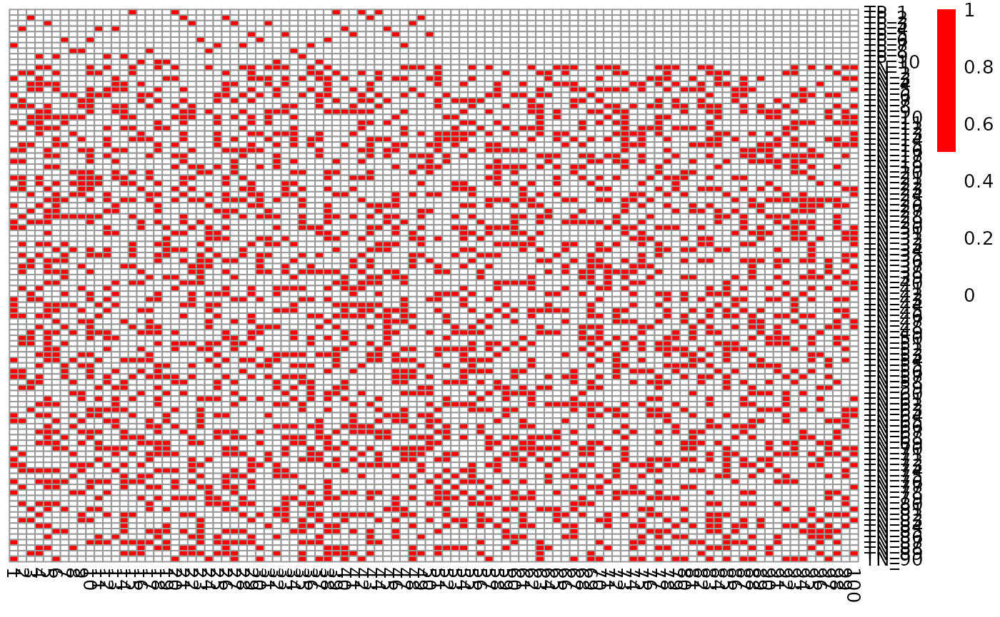

The CaDrA package currently supports four scoring functions to search for subsets of genomic features that are likely associated with a specific outcome of interest (e.g., protein expression, pathway activity, etc.)
- Kolmogorov-Smirnov Method (
ks) - Conditional Mutual Information Method (
revealer) - Wilcoxon Rank-Sum Method (
wilcox) - Custom - An User Defined Scoring Method (
custom)
Below, we run candidate_search() over the top 3 starting
features using each of the four scoring functions described above.
Important Note:
- The legacy or deprecated function
topn_eval()is equivalent to the new and recommendedcandidate_search()function
Load packages
library(CaDrA)
library(pheatmap)
library(SummarizedExperiment)Load required datasets
- A
binary features matrixalso known asFeature Set(such as somatic mutations, copy number alterations, chromosomal translocations, etc.) The 1/0 row vectors indicate the presence/absence of ‘omics’ features in the samples. TheFeature Setcan be a matrix or an object of class SummarizedExperiment from SummarizedExperiment package) - A vector of continuous scores (or
Input Scores) representing a functional response of interest (such as protein expression, pathway activity, etc.)
Heatmap of simulated feature set
The simulated dataset, sim_FS, comprises of 1000 genomic
features and 100 sample profiles. There are 10 left-skewed (i.e. True
Positive or TP) and 990 uniformly-distributed (i.e. True Null or TN)
features simulated in the dataset. Below is a heatmap of the first 100
features.
mat <- SummarizedExperiment::assay(sim_FS)
pheatmap::pheatmap(mat[1:100, ], color = c("white", "red"), cluster_rows = FALSE, cluster_cols = FALSE)
Search for a subset of genomic features that are likely associated with a functional response of interest using four scoring methods
1. Kolmogorov-Smirnov Scoring Method
See ?ks_rowscore for more details
ks_topn_l <- CaDrA::candidate_search(
FS = sim_FS,
input_score = sim_Scores,
method = "ks_pval", # Use Kolmogorov-Smirnov scoring function
method_alternative = "less", # Use one-sided hypothesis testing
weights = NULL, # If weights is provided, perform a weighted-KS test
search_method = "both", # Apply both forward and backward search
top_N = 3, # Evaluate top 3 starting points for the search
max_size = 10, # Allow at most 10 features in meta-feature matrix
do_plot = FALSE, # We will plot it AFTER finding the best hits
best_score_only = FALSE # Return all results from the search
)
# Now we can fetch the feature set of top N features that corresponded to the best scores over the top N search
ks_topn_best_meta <- topn_best(ks_topn_l)
# Visualize best meta-feature result
meta_plot(topn_best_list = ks_topn_best_meta)
2. Wilcoxon Rank-Sum Scoring Method
See ?wilcox_rowscore for more details
wilcox_topn_l <- CaDrA::candidate_search(
FS = sim_FS,
input_score = sim_Scores,
method = "wilcox_pval", # Use Wilcoxon Rank-Sum scoring function
method_alternative = "less", # Use one-sided hypothesis testing
search_method = "both", # Apply both forward and backward search
top_N = 3, # Evaluate top 3 starting points for the search
max_size = 10, # Allow at most 10 features in meta-feature matrix
do_plot = FALSE, # We will plot it AFTER finding the best hits
best_score_only = FALSE # Return all results from the search
)
# Now we can fetch the feature set of top N feature that corresponded to the best scores over the top N search
wilcox_topn_best_meta <- topn_best(topn_list = wilcox_topn_l)
# Visualize best meta-feature result
meta_plot(topn_best_list = wilcox_topn_best_meta)
3. Conditional Mutual Information Scoring Method
See ?revealer_rowscore for more details
revealer_topn_l <- CaDrA::candidate_search(
FS = sim_FS,
input_score = sim_Scores,
method = "revealer", # Use REVEALER's CMI scoring function
search_method = "both", # Apply both forward and backward search
top_N = 3, # Evaluate top 3 starting points for the search
max_size = 10, # Allow at most 10 features in meta-feature matrix
do_plot = FALSE, # We will plot it AFTER finding the best hits
best_score_only = FALSE # Return all results from the search
)
# Now we can fetch the ESet of top feature that corresponded to the best scores over the top N search
revealer_topn_best_meta <- topn_best(topn_list = revealer_topn_l)
# Visualize best meta-feature result
meta_plot(topn_best_list = revealer_topn_best_meta)
4. Correlation Scoring Method
See ?custom_rowscore for more details
corr_topn_l <- CaDrA::candidate_search(
FS = SummarizedExperiment::assay(sim_FS),
input_score = sim_Scores,
method = "correlation", # Use correlation scoring function
cmethod = "spearman", # Use spearman correlation scoring function
top_N = 3, # Evaluate top 3 starting points for the search
max_size = 10, # Allow at most 10 features in meta-feature matrix
do_plot = FALSE, # We will plot it AFTER finding the best hits
best_score_only = FALSE # Return all results from the search
)
# Now we can fetch the feature set of top N feature that corresponded to the best scores over the top N search
corr_topn_best_meta <- topn_best(topn_list = corr_topn_l)
# Visualize best meta-feature result
meta_plot(topn_best_list = corr_topn_best_meta)5. Custom - An User Defined Scoring Method
See ?custom_rowscore for more details
# A customized function using ks-test
customized_ks_rowscore <- function(FS, input_score, weights=NULL, meta_feature=NULL, alternative="less", metric="pval"){
metric <- match.arg(metric)
alternative <- match.arg(alternative)
# Check if meta_feature is provided
if(!is.null(meta_feature)){
# Getting the position of the known meta features
locs <- match(meta_feature, row.names(FS))
# Taking the union across the known meta features
if(length(locs) > 1) {
meta_vector <- as.numeric(ifelse(colSums(FS[locs,]) == 0, 0, 1))
}else{
meta_vector <- as.numeric(FS[locs, , drop=FALSE])
}
# Remove the meta features from the binary feature matrix
# and taking logical OR btw the remaining features with the meta vector
FS <- base::sweep(FS[-locs, , drop=FALSE], 2, meta_vector, `|`)*1
# Check if there are any features that are all 1s generated from
# taking the union between the matrix
# We cannot compute statistics for such features and thus they need
# to be filtered out
if(any(rowSums(FS) == ncol(FS))){
verbose("Features with all 1s generated from taking the matrix union ",
"will be removed before progressing...\n")
FS <- FS[rowSums(FS) != ncol(FS), , drop=FALSE]
# If no features remained after filtering, exist the function
if(nrow(FS) == 0) return(NULL)
}
}
# KS is a ranked-based method
# So we need to sort input_score from highest to lowest values
input_score <- sort(input_score, decreasing=TRUE)
# Re-order the matrix based on the order of input_score
FS <- FS[, names(input_score), drop=FALSE]
# Check if weights is provided
if(length(weights) > 0){
# Check if weights has any labels or names
if(is.null(names(weights)))
stop("The weights object must have names or labels that ",
"match the labels of input_score\n")
# Make sure its labels or names match the
# the labels of input_score
weights <- as.numeric(weights[names(input_score)])
}
# Get the alternative hypothesis testing method
alt_int <- switch(alternative, two.sided=0L, less=1L, greater=-1L, 1L)
# Compute the ks statistic and p-value per row in the matrix
ks <- .Call(ks_genescore_mat_, FS, weights, alt_int)
# Obtain score statistics from KS method
# Change values of 0 to the machine lowest value to avoid taking -log(0)
stat <- ks[1,]
# Obtain p-values from KS method
# Change values of 0 to the machine lowest value to avoid taking -log(0)
pval <- ks[2,]
pval[which(pval == 0)] <- .Machine$double.xmin
# Compute the scores according to the provided metric
scores <- ifelse(rep(metric, nrow(FS)) %in% "pval", -log(pval), stat)
names(scores) <- rownames(FS)
return(scores)
}
# Search for best features using a custom-defined function
custom_topn_l <- CaDrA::candidate_search(
FS = SummarizedExperiment::assay(sim_FS),
input_score = sim_Scores,
method = "custom", # Use custom scoring function
custom_function = customized_ks_rowscore, # Use a customized scoring function
custom_parameters = NULL, # Additional parameters to pass to custom_function
weights = NULL, # If weights is provided, perform a weighted test
search_method = "both", # Apply both forward and backward search
top_N = 3, # Evaluate top 3 starting points for the search
max_size = 10, # Allow at most 10 features in meta-feature matrix
do_plot = FALSE, # We will plot it AFTER finding the best hits
best_score_only = FALSE # Return all results from the search
)
# Now we can fetch the feature set of top N feature that corresponded to the best scores over the top N search
custom_topn_best_meta <- topn_best(topn_list = custom_topn_l)
# Visualize best meta-feature result
CaDrA::meta_plot(topn_best_list = custom_topn_best_meta)
# Evaluate results across top N features you started from
CaDrA::topn_plot(custom_topn_l) For validation purposes, compare the custom and built-in function.
topn_res <- CaDrA::candidate_search(
FS = sim_FS,
input_score = sim_Scores,
method = "ks_pval", # Use Kolmogorov-Smirnov scoring function
method_alternative = "less", # Use one-sided hypothesis testing
weights = NULL, # If weights is provided, perform a weighted-KS test
search_method = "both", # Apply both forward and backward search
top_N = 3, # Evaluate top 7 starting points for each search
max_size = 10, # Maximum size a meta-feature matrix can extend to
do_plot = FALSE, # Plot after finding the best features
best_score_only = FALSE # Return all results from the search
)
## Fetch the meta-feature set corresponding to its best scores over top N features searches
topn_best_meta <- topn_best(topn_res)
# Visualize the best results with the meta-feature plot
meta_plot(topn_best_list = topn_best_meta)
# Evaluate results across top N features you started from
topn_plot(topn_res) 
SessionInfo
sessionInfo()
R version 4.4.1 (2024-06-14)
Platform: x86_64-pc-linux-gnu
Running under: Ubuntu 22.04.4 LTS
Matrix products: default
BLAS: /usr/lib/x86_64-linux-gnu/openblas-pthread/libblas.so.3
LAPACK: /usr/lib/x86_64-linux-gnu/openblas-pthread/libopenblasp-r0.3.20.so; LAPACK version 3.10.0
locale:
[1] LC_CTYPE=C.UTF-8 LC_NUMERIC=C LC_TIME=C.UTF-8
[4] LC_COLLATE=C.UTF-8 LC_MONETARY=C.UTF-8 LC_MESSAGES=C.UTF-8
[7] LC_PAPER=C.UTF-8 LC_NAME=C LC_ADDRESS=C
[10] LC_TELEPHONE=C LC_MEASUREMENT=C.UTF-8 LC_IDENTIFICATION=C
time zone: UTC
tzcode source: system (glibc)
attached base packages:
[1] stats4 stats graphics grDevices utils datasets methods
[8] base
other attached packages:
[1] CaDrA_1.0.2 testthat_3.2.1.1
[3] devtools_2.4.5 usethis_3.0.0
[5] pheatmap_1.0.12 SummarizedExperiment_1.34.0
[7] Biobase_2.64.0 GenomicRanges_1.56.1
[9] GenomeInfoDb_1.40.1 IRanges_2.38.1
[11] S4Vectors_0.42.1 BiocGenerics_0.50.0
[13] MatrixGenerics_1.16.0 matrixStats_1.3.0
loaded via a namespace (and not attached):
[1] bitops_1.0-8 tcltk_4.4.1 remotes_2.5.0
[4] rlang_1.1.4 magrittr_2.0.3 compiler_4.4.1
[7] reshape2_1.4.4 systemfonts_1.1.0 vctrs_0.6.5
[10] stringr_1.5.1 profvis_0.3.8 pkgconfig_2.0.3
[13] crayon_1.5.3 fastmap_1.2.0 XVector_0.44.0
[16] ellipsis_0.3.2 labeling_0.4.3 caTools_1.18.2
[19] utf8_1.2.4 promises_1.3.0 rmarkdown_2.27
[22] sessioninfo_1.2.2 UCSC.utils_1.0.0 ragg_1.3.2
[25] purrr_1.0.2 xfun_0.46 zlibbioc_1.50.0
[28] cachem_1.1.0 jsonlite_1.8.8 highr_0.11
[31] later_1.3.2 DelayedArray_0.30.1 parallel_4.4.1
[34] R6_2.5.1 bslib_0.8.0 stringi_1.8.4
[37] RColorBrewer_1.1-3 pkgload_1.4.0 brio_1.1.5
[40] jquerylib_0.1.4 Rcpp_1.0.13 iterators_1.0.14
[43] knitr_1.48 R.utils_2.12.3 R.cache_0.16.0
[46] httpuv_1.6.15 Matrix_1.7-0 rstudioapi_0.16.0
[49] abind_1.4-5 yaml_2.3.10 doParallel_1.0.17
[52] gplots_3.1.3.1 codetools_0.2-20 miniUI_0.1.1.1
[55] misc3d_0.9-1 pkgbuild_1.4.4 plyr_1.8.9
[58] lattice_0.22-6 tibble_3.2.1 shiny_1.9.1
[61] withr_3.0.1 evaluate_0.24.0 desc_1.4.3
[64] urlchecker_1.0.1 pillar_1.9.0 KernSmooth_2.23-24
[67] foreach_1.5.2 rprojroot_2.0.4 ggplot2_3.5.1
[70] munsell_0.5.1 scales_1.3.0 gtools_3.9.5
[73] xtable_1.8-4 glue_1.7.0 ppcor_1.1
[76] tools_4.4.1 fs_1.6.4 grid_4.4.1
[79] colorspace_2.1-1 GenomeInfoDbData_1.2.12 cli_3.6.3
[82] textshaping_0.4.0 fansi_1.0.6 S4Arrays_1.4.1
[85] gtable_0.3.5 R.methodsS3_1.8.2 sass_0.4.9
[88] digest_0.6.36 SparseArray_1.4.8 farver_2.1.2
[91] htmlwidgets_1.6.4 R.oo_1.26.0 memoise_2.0.1
[94] htmltools_0.5.8.1 pkgdown_2.1.0 lifecycle_1.0.4
[97] httr_1.4.7 mime_0.12 MASS_7.3-60.2